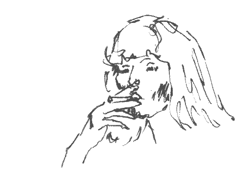

"A victim of the season, need a better reason to be miserable. I blame it on the weather, can't keep it together"
The goal of this lab was to create a lab using bootstrap and adding things like navbars, etc. Overall, this lab was pretty easy to follow. It felt like a refresher from some things we have learned from 251. I like messing with bootstrap, java, and finding themese, for now I just did something simple.
No challenges I had. Just not feeling inspired so did something simple.
Check it out!
"I don't ever wanna feel, like I did that day. Take me to the place I love, take me all the way"